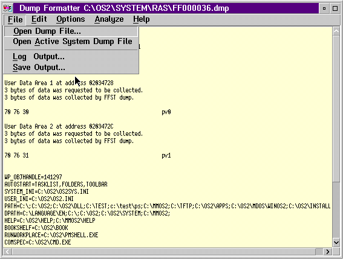

Selecting a Dump to Analyze
You use the File option to open a system dump file.
File Menu-Bar Choices on PM Dump Facility Dump Formatter Window

[Back: Starting the PM Dump Facility Dump Formatter]
[Next: PM Dump Facility Dump Formatter File Option]